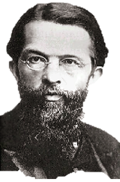
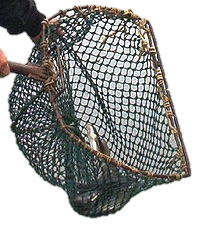
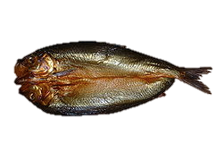
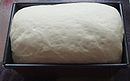
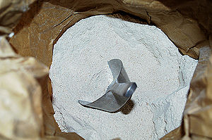
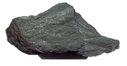
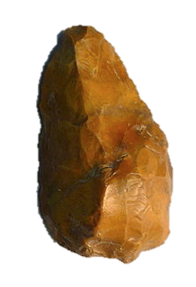

With this lecture: What makes a good money? Rich and Helena: an exchange problem Menger on goods held in common Menger's value table Horses and cows (1) Horses and cows (2)
Contents · 45 slides
- Carl Menger
- Carl Menger
- Economic Goods
- Goods of Higher Orders
- Goods of Higher Orders
- Goods of Higher Orders
- Goods of Higher Orders
- Goods of Higher Orders
- Complementary Higher-Order Goods
- Complementary Higher-Order Goods
- Time and Error
- Time and Error
- Time and Error
- The Division of Labor
- The Deepening of Capital Structure
- The Deepening of Capital Structure
- Planning for Future Needs
- Property
- Property vs. Communism
- Economizing
- Economizing
- Diamond-Water Paradox
- Diamond-Water Paradox
- Diamond-Water Paradox
- Monopoly
- Wealth
- Value
- Value
- Value
- Value Is Determined at the Margin
- Value Is Subjective
- Value Is Subjective
- Labor Theory of Value Refuted
- Labor Theory of Value Refuted
- Labor Theory of Value Refuted
- Labor Theory of Value Refuted
- Price
- Origin of Money
- Origin of Money
- Money Character of Goods
- Money Character of Goods
- Money Character of Goods
- Money Character of Goods
- Money Character of Goods
- Money Character of Goods
1 Carl Menger
- The Marginalist Revolution
2 Carl Menger
- Born 1840
- Died 1921
- Principles of Economics
- Founder of Austrian School of Economics
- Part of Aristotelian revival in Austria

3 Economic Goods
- Satisfies a human need
- Does not exist in sufficient quantities to satisfy all possible uses
- Thus air is not (generally) an economic good
4 Goods of Higher Orders
- “In addition to goods that serve our needs directly (and which will, for the sake of brevity, hence- forth be called ‘goods of first order’) we find a large number of other things in our economy that cannot be put in any direct causal connection with the satisfaction of our needs, but which possess goods-character no less certainly than goods of first order. In our markets, next to bread and other goods capable of satisfying human needs directly, we also see quantities of flour, fuel, and salt. We find that implements and tools for the production of bread, and the skilled labor services necessary for their use, are regularly traded. All these things, or at any rate by far the greater number of them, are incapable of satisfying human needs in any direct way…” – Principles, 56
5 Goods of Higher Orders
- “The requirement for the acquisition of goods-character is the existence of some causal connection, but not necessarily one that is direct, between things and the satisfaction of human needs.” – Principles, 57
- “The order of a good is nothing inherent in the good itself and still less a property of it. ” – Principles, 58
6 Goods of Higher Orders


- We value higher-order goods for the lower order goods they help us to produce.
7 Goods of Higher Orders


8 Goods of Higher Orders
- “Thus quinine would cease to be a good if the diseases it serves to cure should disappear, since the only need with the satisfaction of which it is causally connected would no longer exist. But the disappearance of the usefulness of quinine would have the further consequence that a large part of the corresponding goods of higher order would also be deprived of their goods-character. The inhabitants of quinine-producing countries, who currently earn their livings by cutting and peeling cinchona trees, would suddenly find that not only their stocks of cinchona bark, but also, in consequence, their cinchona trees, the tools and appliances applicable only to the production of quinine, and above all the specialized labor services, by means of which they previously earned their livings, would at once lose their goods-character, since all these things would, under the changed circumstances, no longer have any causal relationship with the satisfaction of human needs.” – Principles, p. 65
9 Complementary Higher-Order Goods
- “For it is never in our power to make use of any particular good of higher order for the satisfaction of our needs unless we also have command of the other (complementary) goods of higher order.” – Principles, p. 59
- “the goods-character of goods of higher order depends on our being able to command their complementary goods in this wider sense of the term” – Principles, p. 62
10 Complementary Higher-Order Goods

- BUT…
11 Time and Error
- “The idea of causality, however, is inseparable from the idea of time. A process of change involves a beginning and a becoming, and these are only conceivable as processes in time. Hence it is certain that we can never fully understand the causal interconnections of the various occurrences in a process, or the process itself, unless we view it in time and apply the measure of time to it.” – Principles, p. 67
12 Time and Error
- “An individual, having at his disposal all the land, labor services, tools, and seed required for the production of an oak forest, will be compelled to wait almost a hundred years before the timber is ready for the axe…” – Principles, p. 68

13 Time and Error
- “After what has been said, it is evident that command of goods of higher order and command of the corresponding goods of first order differ, with respect to a particular kind of consumption, in that the latter can be consumed immediately whereas the former represent an earlier stage in the formation of consumption goods and hence can be utilized for direct consumption only after the passage of an appreciable period of time…”– Principles, p. 68-69
- This is very different than the mutual determination of magnitudes in most of neoclassical economics – in particular, it permits error and disequilibrium.
14 The Division of Labor
- “Adam Smith has made the progressive division of labor the central factor in the economic progress of mankind… I believe, however, that the distinguished author I have just quoted has cast light… on but a single cause of progress in human welfare while other, no less efficient, causes have escaped his attention.” – Principles, p. 72
15 The Deepening of Capital Structure
- “If such a people progressively directs goods of ever higher orders to the satisfaction of its needs, and especially if each step in this direction is accompanied by an appropriate division of labor, we shall doubtless observe that progress in welfare which Adam Smith was disposed to attribute exclusively to the latter factor.” – Principles, p. 73
16 The Deepening of Capital Structure
- Consider a single hunter hunting with:

17 Planning for Future Needs
- “Wherever we turn among civilized peoples we find a system of large-scale advance provision for the satisfaction of human needs. When we are still wearing our heavy clothes for protection against the cold of winter, not only are ready-made spring clothes already on the way to retail stores, but in factories light cloths are being woven which we will wear next summer, while yarns are being spun for the heavy clothing we will use the following winter.” – Principles, p. 79
18 Property
- “Thus human economy and property have a joint economic origin since both have, as the ultimate reason for their existence, the fact that goods exist whose available quantities are smaller than the requirements of men. Property, therefore, like human economy, is not an arbitrary invention but rather the only practically possible solution of the problem that is, in the nature of things, imposed upon us by the disparity between requirements for, and available quantities of, all economic goods.” – Principles, p. 97
19 Property vs. Communism
- “In towns situated on rivers with more water than is wanted by the inhabitants for the sat- isfaction of their needs, everyone goes to the river to draw any desired quantity of water. In virgin forests, everyone fetches unhin- dered the quantity of timber he needs. And everyone admits as much light and air into his house as he thinks proper. This communism is as naturally founded upon a non-economic relationship as prop- erty is founded upon one that is economic.” – Principles, p. 100
20 Economizing
- When a good is in scarce supply, people will attempt:
- to maintain at their disposal every unit of a good standing in this quantitative relationship;
- to conserve its useful properties;
- to make a choice between their more important needs, which they will satisfy with the available quantity of the good in question, and needs that they must leave unsatisfied; and
- to to obtain the greatest possible result with a given quantity of the good or a given result with the smallest possible quantity. (Principles, p. 95)
21 Economizing
- From the notion of economizing, the principle of diminishing marginal utility directly follows. We make sure our most important needs are met first.
22 Diamond-Water Paradox
23 Diamond-Water Paradox
- “That insight resolves the paradox of value that bedeviled the classical economists. ‘Why,’ they wondered, ‘since water is so much more valuable than diamonds, do people pay so much for diamonds and so little, perhaps even nothing, for water?’” – Callahan, Economics for Real People
24 Diamond-Water Paradox
- “’Isn’t the water still more useful than the diamond?’ The answer is, ‘It depends.’ It depends entirely on the valuation of the person who must choose. If a man living next to a clean mountain stream is offered a barrel of water, he may not value it at all. The stream itself provides him with more water than he can possibly use, so the value of this extra quantity to him is literally nothing. But this fellow may not have any diamonds, so the possibility of acquiring even one might be enticing. It is clear that the man will value the diamond more than the water. ” – Callahan, Economics for Real People
25 Monopoly
- “Conversely, goods that are naturally available in quantities exceeding requirements may attain economic character for their consumers if a powerful individual excludes the other members of the economy from freely acquiring and using them.” – Principles, p. 104
26 Wealth
- “Earlier we called ‘the entire sum of goods at a person’s command’ his property. The entire sum of economic goods at an economizing individual’s command we will, on the other hand, call his wealth.” – Principles, p. 109
27 Value
- “If the requirements for a good are larger than the quantity of it available, and some part of the needs involved must remain unsatisfied… the available quantity of the good can be diminished by no part of the whole amount… without causing some need, previously provided for, to be satisfied either not at all or only less completely than would otherwise have been the case. The satisfaction of some one human need is therefore dependent on the availability of each concrete, practically significant, quantity of all goods subject to this quantitative relationship. If economizing men become aware of this circumstance… these goods attain for them the significance we call value.” – Principles, p. 115
28 Value
- “Value is therefore nothing inherent in goods, no property of them, but merely the importance that we first attribute to the satisfaction of our needs, that is, to our lives and well-being, and in consequence carry over to economic goods as the exclusive causes of the satisfaction of our needs.” – Principles, p. 116
29 Value
- Given the following value scheme, choice will proceed along a diagonal so that the third “I” good will be chosen before the first “IV” good.
30 Value Is Determined at the Margin
- “We have been asking what value a given unit of a quantity of goods possessed by an economizing individual has for him. Our question can be more precisely stated with respect to the nature of value if it is stated in this form: which satisfaction would not be attained if the economizing individual did not have the given unit at his disposal—that is, if he were to have command of a total amount smaller by that one unit?” – Principles, p. 131
31 Value Is Subjective
- “The measure of value is entirely subjective in nature… What one person disdains or values lightly is appreciated by another, and what one person abandons is often picked up by another.” – Principles, p. 146
32 Value Is Subjective
- “Hence not only the nature but also the measure of value is subjective. Goods always have value to certain economizing individuals and this value is also determined only by these individuals.” – Principles, p. 146
33 Labor Theory of Value Refuted
- It does not matter how much labor went into a higher order good – if a complementary good disappears, it becomes valueless.
34 Labor Theory of Value Refuted
- “Economic character is by no means restricted to goods that are the objects of human economy in a social context. If an isolated individual’s requirements for a good are greater than the quantity of the good available to him, we will observe him [economizing]… The cause of the economic character of a good cannot therefore be the fact that it is either an “object of exchange” or an “object of property.” Nor can the fact that some goods are products of labor while others are given us by nature without labor be represented with any greater justice as the criterion for distinguishing economic from non-economic character.” – Principles, p. 101
35 Labor Theory of Value Refuted
- “Experience tells us that many goods on which no labor was expended (alluvial land, water power, etc.) display economic character whenever they are available in quantities that do not meet our requirements. Nor does the fact that a thing is a product of labor by itself necessarily result in its having goods-character, let alone economic character. Hence the labor expended in the production of a good cannot be the criterion of economic character.” – Principles, p. 102
36 Labor Theory of Value Refuted
- “Whether a diamond was found accidentally or was obtained from a diamond pit with the employment of a thousand days of labor is completely irrelevant for its value. In general, no one in practical life asks for the history of the origin of a good in estimating its value…” – Principles, p. 146
37 Price
- How marginal utility determines exchange values:
- Here Rich makes traps and Helena hunts rats. Their preference scales are:
- Thus 2 traps will trade for four rats.
38 Origin of Money
- Many goods are more readily trade-able than others:
- Livestock
- Salt
- Gems
- Grains
- Beads
- Shells


39 Origin of Money
- Eventually, one good becomes recognized as the most widely trade-able.
- Most often, this is gold or silver.

40 Money Character of Goods
- The good transports easily.
- If someone wants to trade using a commodity, it helps to be able to get the commodity to the trading site. Early instances of indirect exchange often employed livestock, especially cattle. That was money that not only talked but walked as well. Land is a poor medium of exchange because you can’t ever bring it anywhere.
41 Money Character of Goods
- The good is relatively scarce.
- This criterion is closely tied to the one above. If the good used as money is plentiful, you’ll tend to need a lot of it to make your purchases, making it hard to move around. For instance, if we used topsoil as money, we would all need a dump truck to go grocery shopping.
42 Money Character of Goods
- The good is relatively imperishable.
- You don’t want your money “going bad” a couple of hours or days after you get it. The longer you can hold your money, the more opportunity you have to wait for a good deal to come around. This is why items like milk, eggs, meat, and so on are not suitable as money. Live- stock can, of course, die, but you can check when you’re trading to ensure that you’re not being given money that’s on its last legs. The precious metals and gems clearly stand out in this regard.
43 Money Character of Goods
- The good is easy to store.
- Not only should your money last, you don’t want to have to go through a lot of rigmarole to get it to last. A chemical compound that is only stable below -300 degrees Fahrenheit will not come to be used as money. Carl Menger mentions that cattle were a popular medium of exchange among people in societies that were primarily agricultural and had plenty of open land nearby. The rise of cities made cattle much less useful as money. Most co-ops have strict rules against keeping livestock in an apartment, and the practice makes it very hard to keep the shag carpet clean. The precious metals and gems are again winners here.
44 Money Character of Goods
- The good is easily divisible.
- Not every exchange ratio will result in whole numbers of each good being exchanged. If your money is easily divisible, you can make change. Livestock clearly falls short in this regard, as once you divide it up, it’s not going to walk anywhere for you, and it becomes much more perishable. Gems are weak here also, given the difficulty in dividing them without destroying much of their value.
45 Money Character of Goods
- Each unit of the good is very similar to every other unit.
- You don’t want to keep fussing around checking out the quality of your money and adjusting the exchange ratio based on this quality. For one thing, someone else might judge this quality differently than you do. Diamonds, while in many ways suitable as money, are problematic in this regard—it takes an expert to judge the value of any particular diamond. The divisibility problem with diamonds is related to this. You can’t get the price of a whole diamond by adding up the prices of its pieces once it is cut.